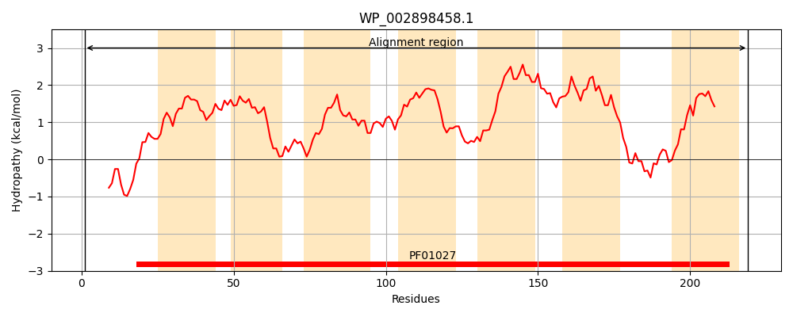
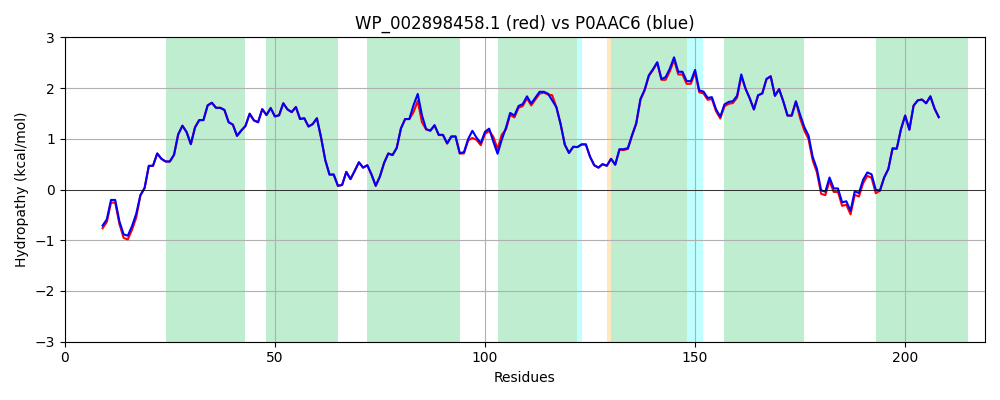

Hit Accession: P0AAC6
Hit TCID: 1.A.14.2.1
Hit Description: gnl|BL_ORD_ID|8653 gnl|TC-DB|P0AAC6|1.A.14.2.1 Inner membrane protein yccA - Escherichia coli.
Mach Len: 219
e:0.000000
Query TMS Count : 7
Hit TMS Count: 7
TMS-Overlap Score: 7.150000
Predicted Substrates:None
BLAST Alignment:
Score: 1031 , Bit scores: 401 bits, E-value: 1.2e-144, Alignment length: 219, Percentage identity: 95
Query: 1 MDRIITSSRDRSSLLSTHKVLRNTYFLLSLTLAFSAITATASTVLMLPSPGLILTLVGMYGLMFLTYKTANKPTGIISAFAFTGFLGYILGPMLNAYLSAGMGDLIGLALGGTALVFFCCSAYVLTTRKDMSFLGGMLMAGVVVVLIGMVANLFLQLPALHLAISAVFILISSGAILFETSNIIRGGETNYIRATVSLYVSLYNIFVSLLSILGFASRD 219
MDRI++SS DR+SLLSTHKVLRNTYFLLSLTLAFSAITATASTVLMLPSPGLILTLVGMYGLMFLTYKTANKPTGIISAFAFTGFLGYILGP+LN YLSAGMGD+I +ALGGTALVFFCCSAYVLTTRKDMSFLGGMLMAG+VVVLIGMVAN+FLQLPALHLAISAVFILISSGAILFETSNII GGETNYIRATVSLYVSLYNIFVSLLSILGFASRD
Sbjct: 1 MDRIVSSSHDRTSLLSTHKVLRNTYFLLSLTLAFSAITATASTVLMLPSPGLILTLVGMYGLMFLTYKTANKPTGIISAFAFTGFLGYILGPILNTYLSAGMGDVIAMALGGTALVFFCCSAYVLTTRKDMSFLGGMLMAGIVVVLIGMVANIFLQLPALHLAISAVFILISSGAILFETSNIIHGGETNYIRATVSLYVSLYNIFVSLLSILGFASRD 219 | Protein Hydropathy Plots: |
|---|
|  |  |
Pairwise Alignment-Hydropathy Plot:
|
|---|
|  |